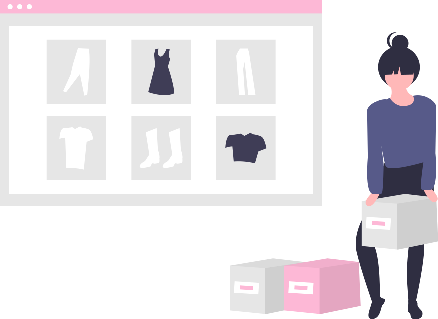

- Fast Fashion -
What is Fast Fashion?
2006年，國際時尚趨勢研究中心發佈“快速、時尚”將成為未來十年服裝行業的發展趨勢。快時尚主要具有四個特點，包括快速提供當下流行的款式和元素，以低價、款多、量少為特點，激發消費者的興趣，最大限度地滿足消費者需求。可以說快時尚是全球化、民主化、年輕化和網路化這四大社會潮流共同影響下的產物。
Brands of Fast Fashion
The Impact of Fast Fashion
- Slow Fashion -
What is Slow Fash?
慢時尚（slow fashion），是一種永續（Sustainable）的時尚理念，所謂的「慢」並不是指速度的快慢，而是指相較於快時尚大量生產製造、市場週期短的服飾，慢時尚注重品質與細節、耐穿、款式經典又百搭，同時也關注一件衣服背後的製造過程與來歷。
慢時尚服飾多為可再生、對環境友善的材質；生產過程不剝削勞工，並實踐公平交易；不大量製造，凸顯衣物本身與設計獨一無二的價值；設計經典又耐穿，同時不失風格，讓穿著者仍保有個人特色。
慢時尚強調好的材質、合理的價格，結合環保意識；讓每件衣服發揮它最大的價值，而不是「穿過即丟」的資源浪費。
Why is Slow Fashion?
慢時尚的核心價值即為永續時尚（sustainable fashion）與道德時尚（ethical fashion）。熱愛時尚，但我們不該將環境、動物與勞工作為流行的代價。
慢時尚讓永續不再只是理念，而是從生產過程、市場消費到穿上衣服的那一刻，都貫徹到底的實踐。
強調品質的慢時尚服飾，背後代表的是全球成衣市場的公平交易、環保生產、永續發展的可能與解決之道。
所以，請你慢下來，與我們一起重新感受衣服的美好，為自己也為全球環境盡一份心。
How to Slow Fashion?
衣櫃必備單品
什麼是衣櫃必備單品？時尚潮流變化莫測，盲目追隨潮流反而容易失去個人特色，只有經典款式能夠永久不衰。除了簡單的素T、牛仔褲以外，根據你的個人風格，找出自己最適合的款式，決定妳衣櫃裡不可或缺的元素是什麼，融入個人特色的經典服飾，就是屬於你的必備單品！
重複穿搭
常常看著滿山滿谷的衣櫃卻覺得自己沒有衣服可以穿嗎？這大概是大部分人的日常煩惱。衣服明明很多，卻常常不知道該穿什麼，因此又買了更多的衣服回家，無形中造成了不必要的浪費。
其實，一件實穿的單品可以給你百變的造型，重複穿搭一點也不無聊，搭配不同飾品與配件，便能夠展現多元的個人風格。試著在每天的造型上發揮個人創意吧！
重質不重量
需要＞想要
不過度購買衣物，每次買衣服前，先想一想：我真的需要這件衣服嗎？我是不是已經有類似款式了？我會很常穿這件衣服嗎？三思後做出最終決定！千萬不要敗給了衝動魔鬼，最後買了衣服卻塞在衣櫃最底層，一次也沒拿出來穿。
質＞量
與其購買大量便宜但品質不那麼好、拋棄率較高的衣物，我們建議購買質感與設計感兼具的服飾，雖然價格可能較高，但長遠來看，不僅能省下不必要的浪費，也能減少對環境帶來的廢棄衣物負擔。透過穿搭技巧，搭配質感衣物，能夠穿出更具特色的個人風格。
- Our Spirit -
" Less is More.
From Fast to Slow. "
- About Us -
五個來自交通大學傳播與科技學系的大二生，熱愛時尚也關心環保。一開始我們只是純粹煩惱衣櫃總是爆滿，但是卻常常不知道該穿什麼的問題，希望可以藉由二手衣物買賣，延續衣物本身價值。在苦惱的同時，我們逐漸開始反思，究竟為什麼人人都會有衣櫃爆滿的困擾？如果所有人的衣櫃都已經爆滿，那還需要大量製造衣物嗎？而不斷製造與丟棄衣服的過程中，我們又造成了多大的浪費？有沒有辦法改善這個問題，且不限於個人，而是改善整體社會共同的困擾？
思考解決辦法與搜尋資料之際，我們發現了人類每年的廢棄衣物造成了多大的時尚浪費，對於環境又是多大得負擔。更因此發現了「慢時尚」這個理念，在時尚與永續之間，我們看到了取得平衡的可能。
因此！我們致力於瞭解每件衣服背後的生產故事，相信「慢時尚」不僅僅是購買衣物時的一種選擇，更可以是一種生活方式，是一種人人都該有的時尚態度！
透過推廣「慢時尚」，我們想帶給人們更好的衣物及生活品質，同時也為環境省下不必要的浪費。藉由理念的傳遞，讓「慢時尚」成為改變世界的力量！
所以請你慢下來，與我們一起重新感受衣服最純粹的美好！